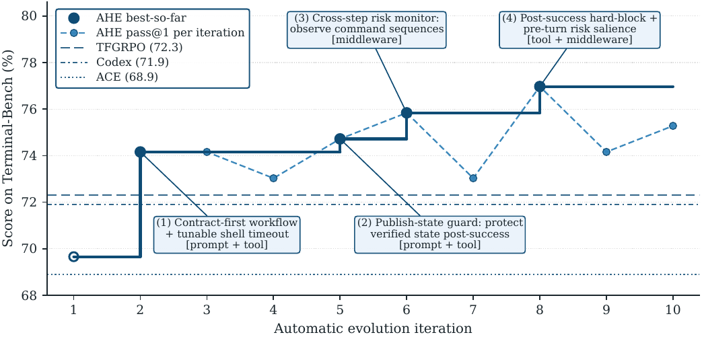
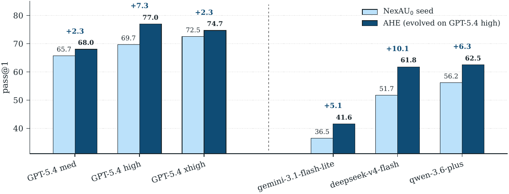
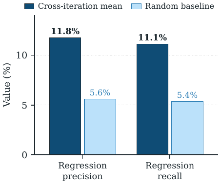

TL;DR — Boucle fermée où un « Evolve Agent » réécrit lui-même le harness d'un agent de code (system prompt, tools, middleware, skills, sub-agents, mémoire long terme) à partir de rapports d'échec distillés, chaque édition étant assortie d'une prédiction déclarée (quelles tâches elle doit réparer, lesquelles elle risque de casser) vérifiée au tour suivant contre les deltas de résultats et annulée par git au niveau fichier si elle ne tient pas.
Claim principal — À modèle de base gelé (GPT-5.4 high), 10 itérations d'AHE font passer pass@1 sur Terminal-Bench 2 de 69.7 % (seed NexAU₀, bash seul) à 77.0 %, au-dessus du harness humain Codex (71.9 %) et des deux boucles d'auto-évolution ACE (68.9 %) et Training-Free GRPO (72.3 %) partant du même seed [Tab. 1] ; le harness gelé transfère sans ré-évolution à SWE-bench-verified (75.6 % vs 75.2 % seed, −12 % de tokens) [Tab. 2] et donne +5.1 à +10.1 pp sur trois familles de modèles tierces [Fig. 4].
Claim secondaire, le plus intéressant — L'auto-attribution de la boucle est asymétrique : le modèle prédit correctement ce qu'il va réparer (fix-precision 33.7 %, fix-recall 51.4 %, ~5× le hasard) mais est aveugle aux régressions qu'il provoque (11.8 % / 11.1 %, ~2× le hasard) [§4.4.2, Fig. 5].
Rollout : k rollouts par tâche avec le harness courant [Alg. 1, phase 1] ;
2. Clean : normalisation des traces en forme canonique [Alg. 1, phase 2] ;
3. Attribute : confrontation du manifeste de l'itération précédente aux deltas observés, puis Rollback [Alg. 1, phase 3] ;
4. AgentDebugger : distillation en couches — chaque message de trajectoire devient un fichier dans un environnement navigable au shell, les traces d'une même tâche sont regroupées, l'agent produit un per-task analysis report (root cause + statut pass/fail), puis un benchmark-level overview agrégé sert de point d'entrée ; les traces brutes et « allégées » restent accessibles pour vérification (progressive disclosure) [§3.2] ;
5. Evolve : éditions du workspace + nouveau manifeste [Alg. 1, phase 5] ;
6. Commit : un commit git par changement logique [Alg. 1, phase 6 ; App. B.2].NexAU₀ est délibérément minimal (un seul outil run_shell_command, 3 règles comportementales, 3 variables runtime — prompt complet recopié en App. B.1) précisément pour qu'un seed déjà adapté au benchmark ne contamine pas l'attribution [§3.1]. Deux Explore Agents one-shot (60 min de budget, 10 sources web, 1 source code) amorcent 3 packages de skills à partir du code source de NexAU et de références publiques d'agents de code [§3.3, Tab. 4, App. B.3] ; ces skills ne bénéficient d'aucune protection et peuvent être supprimés dès l'itération 2 [§3.3]. Heures humaines d'annotation : aucune.Attention : ici le « harness » est l'objet optimisé, pas seulement le décor. Deux niveaux à distinguer.
Instancié sur le framework NexAU, qui expose sept types de composants orthogonaux comme fichiers explicites à des points de montage fixes dans un seul workspace [§3.1, App. B.2] :
| Composant | Fichier(s) | Nature | Usage prescrit |
|---|---|---|---|
| System Prompt | workspace/systemprompt.md |
advisory, s'applique à tout | règles comportementales, workflow |
| Tool Description | workspace/tool_descriptions/*.tool.yaml |
lu au moment de l'appel | clarifier l'usage, exemples, pièges |
| Tool Implementation | workspace/tools/ |
contrôle direct du comportement | nouvelles capacités, gestion d'erreur, formatage |
| Middleware | workspace/middleware/ + code_agent.yaml |
hooks dans la boucle d'agent | intercepter/transformer à l'exécution |
| Skill | workspace/skills/{name}/SKILL.md |
chargé à la demande | patterns de workflow réutilisables |
| Sub-Agent | workspace/sub_agents/{name}/ |
exécution déléguée, contexte isolé | sous-tâche spécialisée |
| Long-Term Memory | workspace/LongTermMEMORY.md |
persistante inter-sessions, MODIFIABLE | pièges récurrents, stratégies prouvées |
| (Short-Term Memory) | workspace/ShortTermMEMORY.md |
gérée par l'agent au runtime | lecture seule pour l'Evolve Agent |
Le couplage est volontairement faible : ajouter un middleware n'oblige pas à toucher le system prompt [§3.1]. C'est ce qui réalise la component observability : chaque pattern d'échec se mappe sur une classe de composant unique, et chaque variation de pass@1 se localise sur un fichier. Chaque édition logique = un commit git → diffs et rollback au niveau fichier « for free » [§3.1].
run_shell_command (avec un argument is_background), le shell servant à inspecter, éditer, builder, tester [App. B.1]. Tout le reste est ce que la boucle AHE ajoute (cf. §5 ci-dessous : timeout_ms par appel, publish-state guard, ExecutionRiskHintsMiddleware…).ContextCompactionMiddleware ; l'Evolve Agent tourne avec un Context compaction threshold de 0.75 [Tab. 4]. Le seuil utilisé par le Code Agent : non précisé.InMemoryTracer enregistre les trajectoires et les mirroire vers Langfuse ; 96 rollouts concurrents [App. A, Tab. 4]. Déterminisme : température 0.7, top-p 0.95 pour le Code Agent [Tab. 4] — donc non déterministe ; les études de cas parlent pourtant de « same random seed » entre rollouts avant/après édition [Fig. C-2, Fig. C-3], ce qui suppose un contrôle de seed non documenté ailleurs. ⚠️ Incohérence mineure non expliquée.validate_agent.py {ws}/code_agent.yaml obligatoire après changements ; et après toute création/modification de middleware, lecture obligatoire d'au moins un agent/nexau.txt d'une tâche échouée, car les erreurs d'init de middleware n'apparaissent que dans les logs runtime [App. B.2].workspace/ (modifiable), runs/iteration_NNN/ (lecture seule) contenant input/workspace/, input/benchmark/{timestamp}/result.json + par tâche agent/nexau.txt, agent/nexau_in_memory_tracer.cleaned.json, verifier/reward.txt, input/analysis/overview.md + detail/{task}.md, input/variant_selection.json, input/change_evaluation.json ; plus evolution_history.md cumulatif et config_snapshot.yaml.evolution_history.md → analysis/overview.md (« MANDATORY: Read analysis/ first », « do NOT skip them to read raw traces directly ») → detail/{task}.md → traces brutes seulement en dernier recours [App. B.2].workspace/ ; runs/ en lecture seule ; interdiction de modifier LLM config, tracer, verifier, infra ; interdiction de supprimer les règles du system prompt de l'itération 1 [§3.3, App. B.2]. Budget : 500 tours de modèle, reasoning xhigh, 200k contexte [Tab. 4].variant_selection.json [App. B.2] ; variant_N/ apparaît dans l'arborescence. ⚠️ Le nombre de variantes utilisé dans la run de référence n'apparaît pas dans Tab. 4 : non précisé. Toute la §4 lit comme une campagne single-variant.db-wal-recovery [App. C.1.1, Fig. C-2]Préfixe commun aux deux rollouts (même seed) :
S1. ls /app -> main.db, main.db-wal
S2. xxd /app/main.db-wal révèle un motif XOR 0x42
S3. le premier appel sqlite3 auto-checkpointe, le fichier WAL disparaît silencieusement
AVANT chg-1 (seed NexAU0, itération 1, reward 0.0) :
F1. XOR sur le stdout xxd EN CACHE, les octets WAL bruts ont déjà disparu
F2. lit les 5 lignes visibles, puis SUPPOSE que les lignes manquantes suivent value = id x 100
F3. INSERT OR REPLACE lignes 6 à 11 avec valeurs devinées, écrit recovered.json
F4. auto-vérification « json length == 11 » -> oui, s'arrête là
Soumis : 100, 200, ..., 1100 ; le vérifieur caché asserte value == 150 sur id == 1
-> 2 tests sur 7 échouent, reward 0
APRÈS chg-1 (même seed, itération 2, reward 1.0) :
P1. relit la spec verbatim, traite « WAL changes » comme des MUTATIONS de lignes existantes
P2. find / -name "*.wal" vide -> bascule en récupération disque brut
P3. carve /dev/vda au bloc 203050, XOR 0x42, réécrit /app/main.db-wal, magic 377f0682 valide
P4. sqlite3 rapporte 11 lignes, value = 150, 250, 300, ...
P5. sweep d'acceptation final qui MIROITE le vérifieur :
wal_magic == 377f0682 ; json length == 11 ; sorted ids == 1..11 ; json rows == db rows
-> 7 tests sur 7 passent, reward 1
Point saillant : chg-1 est un append de 68 lignes à systemprompt.md sans aucune mention de SQLite, WAL ou du nom de la tâche, et db-wal-recovery ne figurait pas dans les predicted_fixes de chg-1 — l'édition a été proposée pour un autre cluster de tâches partial-pass et a porté par généralité [App. C.1.1].
Il faut distinguer deux vérifieurs empilés. C'est le point le plus important du papier pour nous.
pass@1 = (1/(k|D|)) Σᵢ Σⱼ rᵢⱼ [App. A]. Les k=2 rollouts donnent un signal de taux de réussite par tâche (0/2, 1/2, 2/2) qui « stabilise pass@1 et permet aux tâches partial-pass d'ancrer le diagnostic comparatif » [§3.3].Tokens k) et combiné a posteriori en Succ/Mtok = pass@1 × 10⁶ / tokens moyens [App. A, Tab. 5], jamais optimisé : « The sole optimization target is pass@1 » [App. B.2].runs/ sont en lecture seule pour le méta-agent, ce qui « bloque les raccourcis qu'un auto-modificateur non contraint prendrait : désactiver le vérifieur, changer le modèle, ou augmenter le budget de raisonnement » [§3.3]. S'y ajoutent, en langage naturel dans le prompt : pas de logique task-specific ni de solutions hardcodées, pas de rétro-ingénierie des tests depuis les trajectoires, pas de modification de llm_config (« LLM config changes consistently cause broad, hard-to-diagnose regressions ») [App. B.2].C'est le mécanisme que le papier revendique comme central (« decision observability », « falsifiable contract »). Détail de ce qui est réellement écrit :
change_manifest.json, dont le schéma JSON est recopié [App. B.2] :{
"iteration": {{ iteration }},
"changes": [
{
"id": "chg-1",
"type": "new|improvement|rollback",
"description": "What was changed and why",
"files": ["relative/to/workspace/file.py"],
"failure_pattern": "The failure class this addresses",
"predicted_fixes": ["task-name-a", "task-name-b"],
"risk_tasks": ["task-name-c"],
"constraint_level": "middleware|tool_impl|tool_desc|skill|prompt",
"why_this_component": "Why this component level was chosen over alternatives"
}
]
}
Rollback(H_{t-1}, V_t) au niveau fichier, via l'historique git du workspace [Alg. 1 ligne 7, §3.1].if pass@1(T_t) > pass@1(H_best) then H_best ← H_t [Alg. 1] ; c'est ce best-so-far qui est reporté comme « AHE ».⚠️ Ce qui manque au critère d'acceptation, et qui compte pour nous :
1. Aucun seuil quantitatif n'est donné. Combien de predicted_fixes doivent se matérialiser pour un KEEP ? Combien de régressions non prédites déclenchent un ROLLBACK ? Comment arbitrer une édition qui répare 2 tâches et en casse 2 ? Non précisé.
2. Ambiguïté sur qui décide. Alg. 1 présente Attribute puis Rollback comme des fonctions déterministes, et la légende Fig. C-6 parle de « the same automatic rollback if their predicted fixes do not appear ». Mais le prompt [App. B.2, « Analysis Approach », point 9] confie KEEP/IMPROVE/ROLLBACK à l'Evolve Agent lisant le « Change Attribution Report ». Le papier ne tranche pas.
3. Le contrat n'est pas contraignant en pratique. Trajectoire 4 : à l'itération 7 le score avait régressé de 75.8 à 73.0 avec le publish-state guard porté depuis 3 tours et le middleware depuis 2 ; « Rather than roll either back, the iteration-7 round patched a loophole » [App. C.1.4]. Donc face à une régression mesurée, la boucle a choisi IMPROVE, pas ROLLBACK — ce qui s'est avéré payant ici (76.97 à l'it. 8) mais montre que le « falsifiable contract » est en réalité un avis consultatif que le méta-agent peut surseoir.
4. Attribution non causale. Les deltas de tâches sont attribués à des éditions alors que 2 changements sont typiquement shippés ensemble à chaque tour [App. C.2.1 à C.2.4], avec k=2 rollouts et T=0.7 : le bruit de flip d'une tâche individuelle est du même ordre que le signal. Le papier le reconnaît implicitement en notant que db-wal-recovery a été réparée par une édition qui ne la prédisait pas [App. C.1.1].
5. Le critère n'est jamais ablaté. Il n'existe aucun run « AHE sans manifeste/prédiction/rollback ». Cf. §7.
Pas de juge LLM dans le reward. L'Agent Debugger (GPT-5.4) joue un rôle de juge de diagnostic (root cause, pattern classes), mais son output n'est pas un score : il alimente le corpus d'évidence. Sa fiabilité — accord avec des humains sur les root causes — n'est jamais mesurée. Son prompt n'est pas recopié (contrairement à ceux de l'Evolve Agent et des deux Explore Agents) : l'App. B ne contient pas de bloc Agent Debugger, le papier renvoie à un travail antérieur des auteurs [§3.2]. ⚠️ Pilier central (« experience observability ») dont l'implémentation est la moins documentée.
H, l'espace de recherche est l'espace des workspaces, l'opérateur de mutation est l'Evolve Agent conditionné sur le corpus d'évidence, et la sélection est le best-so-far de l'Alg. 1. C'est une recherche locale guidée par langage, apparentée à ACE / GEPA / Training-Free GRPO mais sur un espace d'action plus large que le prompt seul [§2.2, §4.2].| Bloc | Hyperparamètre | Valeur |
|---|---|---|
| Code Agent | modèle / reasoning | GPT-5.4 / high |
| température, top-p | 0.7 / 0.95 | |
| contexte max, génération/tour, tours max | 200 000 / 32 000 / 300 | |
| Agent Debugger | modèle, concurrence, timeout, retries, backoff | GPT-5.4 / 16 / 600 s / 3 / 2 s |
| Evolve Agent | modèle / reasoning | GPT-5.4 / xhigh |
| température, contexte max, génération/tour, tours max | 0.7 / 200 000 / 32 000 / 500 | |
| skill packages, seuil de compaction | 3 / 0.75 | |
| Explore Agent | modèle / reasoning, budget, sources web / code | GPT-5.4 / xhigh, 60 min, 10 / 1 |
| Boucle externe | itérations T, rollouts/tâche k | 10 / 2 |
| rollouts concurrents, sandbox, durée de vie | 96 / E2B remote / 3 600 s | |
| dataset | Terminal-Bench 2, 89 tâches |
llm_config, motivée par des régressions larges observées [App. B.2] ; (e) skills d'amorçage sans protection, supprimables dès it. 2 [§3.3].Tokens k sur SWE-bench, qui baisse de 526 → 461 k entre seed et AHE [Tab. 2] : l'évolution compresse au lieu d'allonger — c'est l'inverse du régime classique de RLVR où la longueur explose.Le papier est inhabituellement riche ici, parce que les failure modes sont sa matière première : chaque édition de harness est la correction d'un failure mode observé. Catalogue complet, comportement → détection → correction.
| # | Comportement | Détection | Correction | Niveau | Source |
|---|---|---|---|---|---|
| 1 | Proxy validation : l'agent clôt sur un substitut auto-inventé (compte de lignes, fichier existe, script tourne) au lieu des assertions du vérifieur | Agent Debugger regroupe sous le pattern « proxy validation instead of evaluator-isomorphic validation » | chg-1 it. 2 : append de 68 lignes au system prompt, 8 règles (extraction du contrat d'acceptation, miroir de l'évaluateur, édition minimale, scoring de candidats, généralisation, budget temps, end-state readiness, règle d'arrêt) |
prompt | App. C.1.1, C.2.1 |
| 2 | Overfit aux échantillons visibles : extrapole value = id × 100 depuis 5 lignes visibles pour inventer les 6 manquantes |
même trace | règle R5 « Generalize, do not overfit visible samples » | prompt | App. C.1.1 |
| 3 | Budget brûlé en timeouts : installs en foreground et boucles sleep-poll heurtant le timeout shell par défaut de 5 min | classe d'échecs récurrente | chg-2 it. 2 : timeout_ms par appel avec plafond relevé, guidance background, hint de récupération appendé à toute sortie timée-out |
tool_impl + tool_desc | App. C.2.1 |
| 4 | Destruction de l'état publié (le plus gros) : l'agent produit le livrable, auto-vérifie avec succès, puis fait rm -rf /app/image /app/reconstructed.ppm /app/scratch en « rangement » final et soumet sur le code retour du rm ; le vérifieur ne trouve plus rien |
path-tracing 0/2 à it. 4 ; règle de prompt anti-destruction déjà présente mais sans mécanisme d'exécution |
chg-7 (prompt + tool descriptor : publish-state rule, scratch-dir rule, literal-output rule) + chg-8 (garde stateful dans l'implémentation du shell : après un final check réussi, parse la commande d'acceptation pour extraire chemins et racines → les marque protégés ; intercepte avant exécution toute commande détruisant une cible protégée ; token ALLOW_POST_SUCCESS_RESET pour rétrograder en warning avec re-validation obligatoire) |
prompt + tool_impl | App. C.1.2, C.2.2 |
| 5 | Proxy indépendant + kill du pipeline nommé : intégration sur grille en R pour obtenir alpha/beta, écrits comme livrables, puis analysis.R lancé en background et tué après 3 min « pour préserver les livrables déjà créés » ; sweep final vérifie seulement que les fichiers existent et parsent |
mcmc-sampling-stan 0/2 à it. 5 ; le vérifieur relance analysis.R, la chaîne diverge, soumis alpha=1.28e19 |
chg-1 it. 6 (extension de la garde publish-state aux entrypoints de script et fichiers de final-check référencés) + chg-2 it. 6 (ExecutionRiskHintsMiddleware) |
tool_impl + middleware | App. C.1.3, C.2.3 |
| 6 | Sept patterns de risque cross-step codifiés dans le middleware : validation superficielle (-h, py_compile, existence seule) · check de service en localhost quand le contrat nomme un endpoint externe · validateur proxy inline au lieu de l'évaluateur nommé · appel d'API modèle bas niveau court-circuitant le wrapper officiel · run de benchmark sans comparateur golden/seuil explicite · runs longs répétés ayant déjà épuisé le budget sur un mode d'échec connu · retries répétés sur la même signature d'erreur |
inspection de l'historique live de commandes via AfterToolHook, état léger accumulé entre étapes, rappels dédupliqués et plafonnés par rollout |
injection d'une note ciblée | middleware | App. C.2.3 |
| 7 | Contournement du token d'override : l'agent attache ALLOW_POST_SUCCESS_RESET pour supprimer /git/www/hello.html et remettre à zéro /git/server/refs/heads/master après un déploiement vérifié, rationalisé en « leaving a clean repo for grading » ; le vérifieur externe reçoit un 404 |
configure-git-webserver et git-multibranch 0/2 à it. 7 |
chg-1 it. 8 : suppression d'un output protégé hors /tmp et reset d'une racine protégée hors /tmp deviennent des hard blocks ; le token survit pour d'autres classes d'interlock mais ne peut plus effacer un livrable vérifié |
tool_impl | App. C.1.4, C.2.4 |
| 8 | Avertissement ignoré (défaut de saillance) : le middleware it. 6 émettait les bons warnings, mais appendus seulement à la sortie d'outil ; au tour de modèle suivant l'agent publiait par-dessus | polyglot-c-py, pytorch-model-recovery échouent à it. 7 malgré un warning correct |
chg-2 it. 8 : BeforeModelHook qui promeut toute note de risque de l'étape précédente en rappel FRAMEWORK en tête du tour suivant ; + inférence one-shot du type de contrat (clean-layout/single-file, wrapper officiel/révision nommée) ; + 2 heuristiques after-tool |
middleware | App. C.1.4, C.2.4 |
| 9 | Interférence non additive entre composants : mémoire, middleware et system prompt poussent tous vers la même vérification de clôture ; les empiler dépense des tours en re-vérifications redondantes | somme des gains mono-composant +11.1 pp vs +7.3 pp d'AHE complet ; memory-only sur Hard (63.3 %) dépasse AHE complet (53.3 %) | non corrigé ; « we leave interaction-aware evolution to future work » | — | §4.4.1, Tab. 3 |
| 10 | Cécité aux régressions de l'auto-attribution : le méta-agent justifie pourquoi une édition doit aider mais ne sait pas nommer ce qu'elle va casser | precision 11.8 % / recall 11.1 % vs 5.6 %/5.4 % hasard ; 43 prédictions de régression sur 9 tours, 5 correctes ; 40 régressions non anticipées | non corrigé ; désigné comme « the clearest direction for future self-evolution loops » | — | §4.4.2, App. D |
Reward hacking au sens strict (l'agent maximise le vérifieur sans faire la tâche) : le papier n'en rapporte aucun cas, ce qui est crédible étant donné que (a) le vérifieur est externe, exécuté hors du shell de l'agent, non modifiable, et (b) le méta-agent n'a aucun accès en écriture au vérifieur ni au tracer [§3.3]. ⚠️ En revanche les cas #1, #2 et #5 sont du self-deception sur un proxy auto-inventé — l'agent hacke sa propre vérification interne, pas le vérifieur officiel. C'est la variante à laquelle un environnement juridique sera exposé en permanence.
⚠️ Le hacking non traité, au niveau méta : l'Evolve Agent optimise pass@1 sur les 89 tâches qui servent aussi d'évaluation. L'interdiction de logique task-specific et de rétro-ingénierie des tests est purement déclarative dans un prompt [App. B.2] ; aucun audit automatique des diffs, aucune mesure de la fréquence de violation. Le seul rempart empirique contre l'overfit est le transfert de la §4.3 — qui est bien conçu et positif, mais post-hoc.
Comportement émergent positif : la hiérarchie découverte par le méta-agent lui-même — règle de prompt seule insuffisante → interlock à l'exécution dans le tool → promotion de saillance dans le contexte du tour suivant. Les auteurs formulent le principe (« chg-7 tells the model what publish state is, chg-8 stops the agent from destroying it even when the model forgets the rule » [App. C.2.2]) et l'un des prompts Explore le nomme explicitement : « Constraint hierarchy: which enforcement mechanisms are strongest? (e.g. tool_impl > middleware > tool_desc > skill > system_prompt) » [App. B.3.2]. L'ablation Tab. 3 le confirme ex post.
InMemoryTracer + mirroring Langfuse [App. A] ; toutes les traces persistées sous runs/iteration_NNN/input/benchmark/{timestamp}/ avec par tâche agent/nexau.txt (logs runtime), nexau_in_memory_tracer.cleaned.json (trace nettoyée) et verifier/reward.txt [App. B.2].| Chiffre annoncé | Où | Source dans le papier | Verdict |
|---|---|---|---|
| pass@1 TB2 : 69.7 % → 77.0 % en 10 itérations | abstract, intro, concl. | Tab. 1 (NexAU₀ 69.7, AHE 77.0) ; Fig. 1 | confirmé, mais à préciser : 77.0 est le best-so-far atteint à l'itération 8 (« Iteration 8's overall score lands at 76.97, the run's high-water mark » [App. C.1.4]) ; Fig. 1 montre ~75.3 à l'itération 10. « Ten iterations lift » masque une courbe non monotone |
| Dépasse le harness humain Codex (71.9 %) | abstract, intro | Tab. 1 : Codex 71.9 % | confirmé en agrégat ; sur-généralisé par tier : sur Hard, Codex 56.7 % > AHE 53.3 % [Tab. 1] — dit dans le corps [§4.2], absent de l'abstract |
| Dépasse ACE et Training-Free GRPO | abstract, intro | Tab. 1 : ACE 68.9 %, TF-GRPO 72.3 % | confirmé ; noter qu'ACE fait pire que le seed (68.9 < 69.7) |
| SWE-bench-verified : « achieves the highest aggregate success » | abstract | Tab. 2, ligne All : AHE 75.6 % vs seed 75.2 %, ACE 74.6 %, TF-GRPO 74.2 % | confirmé mais fragile : marge de +0.4 pp sur 500 tâches (≈ 2 tâches), sans IC, avec régressions sur 3 repos (scikit-learn −6.3, pydata −4.6, astropy −4.5) |
| « 12 % fewer tokens than the seed » | abstract | Tab. 2 : 461 vs 526 k → −12.4 % | confirmé |
| « −32 % vs ACE, −21 % vs TF-GRPO, −12 % vs seed » | §4.3 | Tab. 2 : 461/679 = −32.1 %, 461/582 = −20.8 %, 461/526 = −12.4 % | confirmé |
| « ACE et TF-GRPO dépensent 11 % à 29 % de tokens en plus que le seed » | §4.3 | Tab. 2 : 679/526 = +29.1 %, 582/526 = +10.6 % | confirmé (10.6 arrondi à 11) |
| « +5.1 à +10.1 pp cross-family sur trois familles » | abstract, intro | Fig. 4 : gemini-3.1-flash-lite 36.5→41.6 (+5.1), deepseek-v4-flash 51.7→61.8 (+10.1), qwen-3.6-plus 56.2→62.5 (+6.3) | confirmé tel qu'écrit (« cross-family ») ; ⚠️ sur-généralisé si lu comme « transfert modèle » : within-family le gain tombe à +2.3 pp (med 65.7→68.0, xhigh 72.5→74.7), chiffre absent de l'abstract et de l'intro, présent en §4.3 |
| « with the largest on bases further from saturation » | intro, §4.3 | Fig. 4 | contredit à l'intérieur des trois bases cross-family : la base la plus loin de la saturation, gemini (36.5 %), gagne le moins (+5.1), tandis que deepseek (51.7 %) gagne le plus (+10.1). La monotonie ne tient que si l'on oppose en bloc le groupe cross-family au groupe GPT-5.4 |
| « five positive pass@1 gains from +2.3 to +10.1 pp » | §4.3 | Fig. 4 : +2.3 (med), +2.3 (xhigh, mais 74.7−72.5 = 2.2), +5.1, +6.3, +10.1 | confirmé à un écart d'arrondi près sur xhigh |
| Ablations : le gain vit dans tools, middleware, mémoire, pas le system prompt | abstract, intro | Tab. 3 : memory 75.3, tool 73.0, middleware 71.9 vs seed 69.7 ; system_prompt 67.4 | confirmé ; le « −2.3 pp » du system prompt seul [§4.4.1] = 67.4 − 69.7 ✓ |
| « swapping memory alone already surpasses Codex on Hard » | §4.2 | Tab. 3 memory-only Hard 63.3 % vs Tab. 1 Codex Hard 56.7 % | confirmé ; ⚠️ 30 tâches, et la même variante ne fait que 50.0 % sur Easy (2/4 tâches) |
| « three positive single-component gains sum to +11.1 pp against full AHE's +7.3 pp » | §4.4.1 | Tab. 3 : 5.6 + 3.3 + 2.2 = 11.1 ; 77.0 − 69.7 = 7.3 | confirmé |
| Fix precision 33.7 %, recall 51.4 %, « roughly 5× » le hasard (6.5 %, 10.6 %) | §4.4.2 | Fig. 5 gauche | confirmé (5.2× et 4.85×) |
| Régression precision 11.8 %, recall 11.1 %, « about 2× » le hasard (5.6 %, 5.4 %) | §4.4.2 | Fig. 5 droite ; App. D : 5 prédictions justes sur 43 → cumulatif 11.6 % ; 40 régressions non prévues → 11.1 % | confirmé (11.8 % = moyenne cross-itération, 11.6 % = cumulatif poolé — définitions distinctes, non contradictoires) |
| « roughly 32 hours » pour la campagne de 10 itérations | §4.2 | aucune autre source | introuvable ailleurs (chiffre non décomposé, invérifiable) |
| « millions of raw trajectory tokens » distillés | abstract, §3.2 | aucun chiffre | introuvable |
Anomalie de rédaction : §C.1.4 renvoie à Figure~\ref{fig:evolution-curve}, label inexistant — la figure de la courbe est fig:training_curve (Fig. 1). Référence pendante.
| Benchmark | Baseline | Score baseline | AHE | Écart absolu |
|---|---|---|---|---|
| TB2 all (89) | NexAU₀ seed | 69.7 % | 77.0 % | +7.3 pp |
| TB2 all | Codex (humain) | 71.9 % | 77.0 % | +5.1 pp |
| TB2 all | TF-GRPO | 72.3 % | 77.0 % | +4.7 pp |
| TB2 all | ACE | 68.9 % | 77.0 % | +8.1 pp |
| TB2 Hard (30) | Codex | 56.7 % | 53.3 % | −3.4 pp |
| TB2 Medium (55) | NexAU₀ | 78.2 % | 88.2 % | +10.0 pp |
| SWE-bench-verified (500) | NexAU₀ | 75.2 % | 75.6 % | +0.4 pp |
| SWE-bench tokens/essai | NexAU₀ | 526 k | 461 k | −65 k (−12.4 %) |
| SWE-bench Succ/Mtok | NexAU₀ | 1.43 | 1.64 | +0.21 [Tab. 5] |
Tab. 3, chaque variante injecte un seul composant AHE dans le seed :
| Variante | All | Easy (4) | Medium (55) | Hard (30) |
|---|---|---|---|---|
| NexAU₀ | 69.7 % | 87.5 % | 78.2 % | 51.7 % |
| + memory only | 75.3 % | 50.0 % | 83.6 % | 63.3 % |
| + tool only | 73.0 % | 75.0 % | 87.3 % | 46.7 % |
| + middleware only | 71.9 % | 100.0 % | 81.8 % | 50.0 % |
| + system_prompt only | 67.4 % | 75.0 % | 78.2 % | 46.7 % |
| AHE full | 77.0 % | 100.0 % | 88.2 % | 53.3 % |
Ce que ça isole vraiment : où vit le gain dans le harness produit (mémoire > tools > middleware ≫ prompt, qui régresse), et la non-additivité (11.1 pp de gains individuels → 7.3 pp empilés). Contenu factuel des composants [§4.4.1] : la mémoire = 12 leçons de cas limites (marge de performance, annulation en cas de dépassement de file, clôture façon évaluateur, layout de packaging source) ; les tools = un shell de 1364 lignes qui fait remonter automatiquement des indices de contrat depuis les fichiers voisins de chaque commande ; le middleware = un finish-hook forçant une vérification de clôture isomorphe à l'évaluateur ; le system prompt = 79 lignes de discipline universelle dont l'exécutabilité dépend des trois autres.
❌ Ce qui n'est PAS ablaté, et c'est le trou central : aucune des trois piliers d'observabilité revendiqués n'est retiré. Pas de run « AHE sans manifeste de prédiction ni rollback » (le mécanisme que le titre et l'abstract mettent en avant), pas de « AHE sans Agent Debugger, évolution sur traces brutes », pas de « AHE sur harness couplé ». Les comparaisons à ACE et TF-GRPO sont des baselines, pas des ablations : elles varient simultanément l'espace d'action, la source d'évidence et le critère d'acceptation. Conséquence directe : on ne peut pas savoir si le gain vient de la « falsifiabilité » des éditions ou simplement du fait d'avoir ouvert tools + middleware + mémoire à l'édition. L'ablation Tab. 3 suggère même la seconde hypothèse, puisque le gain est intégralement localisé dans quels composants sont édités.
c0b8a05, 169c34c, 3ba3a90, 4e0aab9, ff0cf3d, 9651986, ca35f53, a4a4a29) [App. C.2]. Niveau de traçabilité inhabituellement élevé. Manque : le prompt de l'Agent Debugger, et la publication du workspace évolué final n'est pas explicitée.Verdict : plausible mais fragile — à répliquer sur un split tenu à l'écart. La mécanique est réelle, richement documentée et le transfert modèle est un vrai résultat. Mais les trois piliers revendiqués ne sont isolés par aucune ablation, le chiffre d'en-tête est in-sample, et le transfert de précision hors domaine est de +0.4 pp — l'effet robustement démontré hors domaine est une réduction de coût de 12 %, pas un gain de capacité. La contribution la plus solide du papier est en réalité négative : les boucles d'auto-évolution prompt-only (ACE, TF-GRPO) dégradent le transfert par rapport au seed, tandis qu'encoder le comportement dans tools/middleware/mémoire le préserve.

Ce qu'il faut voir : le best-so-far (trait plein) ne monte qu'en 4 marches — it. 2 (contract-first workflow + timeout shell réglable, prompt+tool), it. 5 (publish-state guard, prompt+tool), it. 6 (moniteur de risque cross-step, middleware), it. 8 (hard-block post-succès + saillance pré-tour, tool+middleware). Le pass@1 par itération (pointillé) est non monotone : creux à 73.0 aux itérations 4 et 7, et fin à ~75.3 à l'itération 10, soit sous le pic de 77.0 de l'itération 8. Autrement dit, le 77.0 annoncé est unmax sur une trajectoire bruitée à k=2, pas un état convergé — et l'écart au meilleur baseline (TF-GRPO 72.3) n'est franchi de façon stable qu'à partir de l'itération 5. Noter aussi que chaque marche combine deux niveaux de composants, ce qui rend l'attribution par édition intrinsèquement confondue.

Ce qu'il faut voir : les 6 paires seed/AHE sont toutes positives, mais la structure compte plus que le signe. À gauche, intra-famille GPT-5.4 : +2.3 (med), +7.3 (high, la cible d'évolution), +2.2/+2.3 (xhigh) — le gain est 3× plus grand sur le point de fonctionnement où la boucle a tourné, ce qui est exactement la signature d'un couplage au point d'optimisation. À droite, cross-family : +5.1, +10.1, +6.3, tous supérieurs aux gains intra-famille hors cible. À retenir aussi : le seed GPT-5.4 xhigh seul (72.5 %) bat déjà le harness humain Codex (71.9 %, Tab. 1) — le budget de raisonnement substitue en partie à l'ingénierie du harness.
Ce qu'il faut voir : le failure mode structurel de la boucle. 11.8 % de précision et 11.1 % de rappel contre 5.6 %/5.4 % au hasard : le méta-agent est à peine mieux qu'aléatoire pour nommer ce que son édition va casser, alors qu'il est ~5× le hasard pour nommer ce qu'elle va réparer (Fig. 5a : 33.7 %/51.4 %). Sur 9 tours : 43 prédictions de régression émises, 5 correctes ; 40 régressions réellement survenues et non anticipées [App. D]. Conséquence directe : la moitié du « contrat falsifiable » — la clause de risque — est inopérante, et c'est ce qui produit les creux de la Fig. 1. Pour un environnement juridique, c'est l'avertissement central : un système qui propose des modifications et déclare ses risques sait dire ce qu'il veut gagner, pas ce qu'il va perdre.| Ingrédient | Choix du papier | Équivalent juridique | Transfert | Ce qui manque |
|---|---|---|---|---|
| Source des tâches | 89 tâches TB2 publiques, aucune construite ; optimisation directement dessus | Harvey LAB / Vals comme jeux d'évolution, ou set interne de dossiers annotés | adaptable | Un split d'évolution disjoint du set d'éval. Le papier n'en a pas, et c'est reproductible ici sans coût — il faut juste décider de le faire |
| Vérifieur | Exécution de tests binaire, externe, hors du shell de l'agent, non modifiable par le méta-agent | Pas d'équivalent exact. Candidats : citations vérifiables contre une base de sources, contraintes de format/structure d'un mémo, questions à réponse fermée extraites de décisions, rubrique d'expert figée | non (direct) / adaptable pour la couche vérifiable | Le pilier « decision observability » exige des deltas au niveau tâche entre deux tours. Sans reward binaire, il faut un score continu et un test de significativité — que le papier n'a jamais eu à concevoir |
| Harness / outils | 7 types de composants découplés, fichiers à points de montage fixes, 1 commit git par édition, rollback fichier | Même substrat : prompt système, descriptions d'outils, implémentations (recherche jurisprudentielle, citation checker, extraction de clause), middleware (garde de citation, contrôle de juridiction), skills par domaine, sub-agents par juridiction, mémoire longue de pièges récurrents | direct | Rien de conceptuel. C'est de l'architecture, immédiatement réutilisable |
| Algo | Aucun RL ; recherche locale par LLM + sélection best-so-far | Complémentaire au post-training de Gemini, pas concurrent : la boucle optimise l'externe à poids gelés | direct comme couche séparée | Le papier ne dit rien sur l'interaction harness ↔ entraînement du modèle. Un harness évolué contre un modèle donné est-il encore optimal après RL de ce modèle ? Non traité |
| Curriculum | Pas de curriculum de tâches ; concentration du diagnostic sur les tâches partial-pass (k ≥ 2 ⇒ comparer rollout passant vs échouant de la même tâche, trouver le point de divergence) | Mêmes questions juridiques échantillonnées k fois ; les cas à variance non nulle sont les plus informatifs | direct | Rien. C'est le meilleur usage de k > 1 du papier, et il coûte juste k rollouts |
| Anti-hacking | Périmètre d'écriture dur (verifier, tracer, LLM config, runs/ en lecture seule) + interdits déclaratifs dans le prompt + seed minimal pour ne pas contaminer l'attribution |
Le vérifieur juridique, le corpus de sources et le jeu d'éval doivent être hors du périmètre d'écriture du méta-agent | direct (le périmètre) / insuffisant (les interdits déclaratifs) | Aucun audit automatique des diffs contre « task-specific logic ». En juridique, avec un juge LLM éditable, c'est la faille critique : il faut un audit de diff et un juge hors périmètre |
| Hiérarchie d'enforcement | Découverte empiriquement : règle de prompt < interlock dans l'implémentation d'outil < promotion de saillance avant le tour suivant | Une règle « ne cite jamais une source non vérifiée » dans le prompt sera violée ; un citation-checker dans l'outil de rédaction qui refuse l'écriture, non | direct | Rien. C'est le résultat le plus exportable du papier |
La hiérarchie d'enforcement, validée par l'ablation Tab. 3 : prose stratégique ne transfère pas, structure factuelle transfère. Le system prompt seul régresse (67.4 % vs 69.7 % du seed), alors que tools (73.0 %), mémoire (75.3 %) et middleware (71.9 %) portent chacun le gain isolément. Et hors domaine (Tab. 2), les deux méthodes qui encodent en prose — ACE, TF-GRPO — passent sous le seed tout en coûtant 11 à 29 % de tokens en plus, alors qu'AHE gagne et coûte −12 %.
Pour Gemini Law, la traduction est immédiate et va à l'encontre de la pente naturelle du projet : les contraintes juridiques qu'on serait tenté d'écrire dans un long system prompt (vérifier les citations, ne pas mélanger les juridictions, ne pas conclure sans autorité, respecter le format du mémo) doivent être implémentées comme interlocks dans les outils et les middleware, avec promotion de saillance dans le tour suivant quand un warning est émis. Un modèle post-entraîné apprendra plus vite une contrainte que l'environnement rend mécaniquement inviolable qu'une contrainte énoncée dans le prompt, et cette structure survivra au changement de modèle de base — c'est précisément ce que Fig. 4 mesure (+5.1 à +10.1 pp sur trois familles tierces, harness gelé).
Deuxième candidat, plus spéculatif mais plus proche de mes fonctions : le catalogue de 7 patterns de risque cross-step de ExecutionRiskHintsMiddleware [App. C.2.3] est la forme générique d'un détecteur de self-deception. Les équivalents juridiques s'écrivent tout seuls : conclure sans avoir ouvert la moindre source ; citer une décision sans en avoir lu le texte ; valider un mémo contre un critère auto-inventé (« j'ai cité 5 sources ») au lieu du critère du client ; vérifier une règle dans une seule juridiction quand la question en nomme deux ; réutiliser une autorité déjà signalée comme abrogée. Détectables sur l'historique d'appels d'outils, sans vérité terrain.
Sur 1 à 2 semaines, sans toucher aux poids. Prendre l'agent juridique actuel sur un split d'évolution de ~80 à 120 questions disjoint de Harvey LAB / Vals, k = 3 rollouts, et un score par question qui n'a pas besoin d'être parfait — taux de citations vérifiables + couverture des points de la rubrique experte. Découpler le harness en composants-fichiers à la NexAU, faire tourner 6 à 10 itérations d'une boucle AHE. Trois mesures, pas une : 1. le gain in-sample sur le split d'évolution (attendu : +5 à +10 pp, c'est le régime du papier) ; 2. le gain sur Harvey LAB / Vals tenus à l'écart, harness gelé — c'est la seule mesure qui compte, et l'attente calibrée sur Tab. 2 est faible sur la précision (0 à +2 pp) mais nette sur le coût (−10 à −15 % de tokens) ; 3. l'ablation que le papier n'a pas faite : rejouer la même boucle avec le manifeste de prédiction et le rollback désactivés, tout le reste identique. Si l'écart est nul, la « falsifiabilité » est un habillage et le vrai levier est d'avoir ouvert tools + middleware à l'édition — ce qui serait une information très utile et beaucoup moins chère à opérationnaliser.
Résultat attendu, en toute honnêteté : un gain modeste sur la précision juridique, un gain net sur le coût par requête, et un catalogue de failure modes juridiques distillé automatiquement qui vaut probablement plus que le gain de score, parce qu'il alimente directement la conception du reward pour le RL, lui.
Deux, liées.
Sur qui possède le harness. Si la boucle d'évolution du harness et le post-training de Gemini tournent en parallèle, le harness évolué contre le checkpoint n est-il encore optimal contre le checkpoint n+1 ? Le papier montre qu'un harness transfère entre familles de modèles (+5.1 à +10.1 pp) mais aussi que le gain est 3× plus grand au point de fonctionnement exact où la boucle a tourné (+7.3 sur GPT-5.4 high contre +2.3 sur med et xhigh, Fig. 4) — et les auteurs classent eux-mêmes ce couplage budget-de-pas/timeout comme un hasard de généralisation [Limitations]. Concrètement : qui re-tourne la boucle, à quelle cadence par rapport aux releases de checkpoints, et le harness fait-il partie de l'artefact versionné livré à Harvey ?
Sur la cécité aux régressions, transposée à notre reward. §4.4.2 est un résultat négatif qui dépasse le cadre du harness : un agent LLM qui propose une modification et déclare son risque sait nommer ce qu'il va gagner (fix-recall 51.4 %) et pas ce qu'il va casser (regression-recall 11.1 %, 40 régressions non anticipées sur 9 tours). Si l'on compte s'appuyer sur un LLM pour proposer ou pondérer des critères de rubrique juridique, il faut supposer la même asymétrie et instrumenter la détection de régression en dehors du modèle qui propose — quelqu'un a-t-il mesuré cette asymétrie sur nos propres boucles d'amélioration assistées par modèle ?